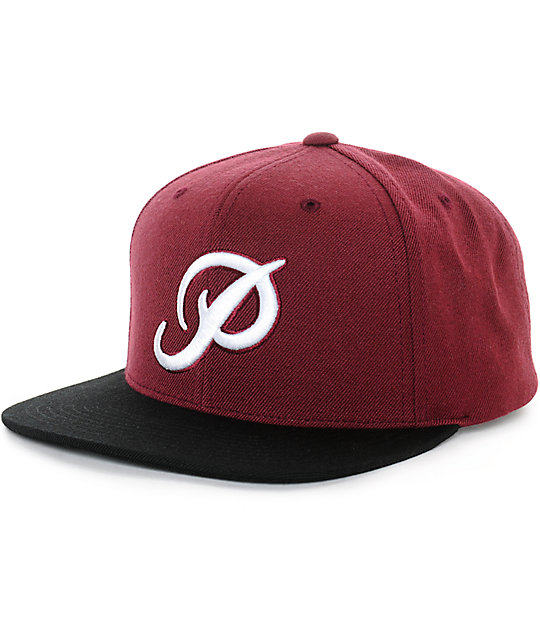

<p style="text-align: center">
  
  
</p>
<script>
  const cat = document.querySelectorAll("img")[0];
  const hat = document.querySelectorAll('img')[1];
  cat.style.border = '5px solid black';
  cat.style.height = '400px';
  hat.style.width = '200px';
  hat.style.border = '5px solid black';

  const animation = function() {
    let angle = 0; 
    let lastTime = null;

    const animate = function(time) {
      if (lastTime != null)
        angle += (time - lastTime) * 0.001;
      lastTime = time;

      cat.style.top = 200 + (Math.sin(angle) * 100) + "px";
      cat.style.left = (Math.cos(angle) * 200) + "px";

      hat.style.top = -150 +(Math.cos(angle) * 100) + "px";
      hat.style.left = 600 +(Math.sin(angle) * 200) + "px";

      requestAnimationFrame(animate);
    };
    
    requestAnimationFrame(animate);
  };

  animation();
</script>
